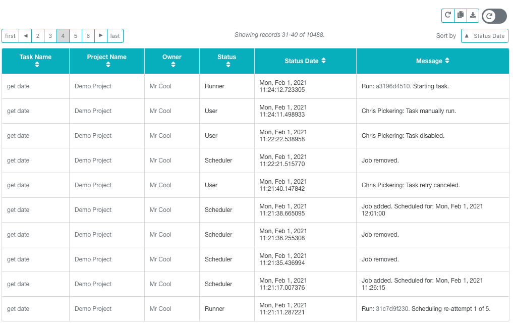

Dash¶
EM2’s dashboard is designed to give an admin a quick overview of the upcoming run schedule, listing of any failed jobs, and also recent run history.
Tables¶
EM2 is full of tables. These tables load through Ajax and run sql queries on the server. This enables us to load tables for millions of rows with minimal delay.
Tables can be sorted “globally” using the dropdown selector, or the 10 rows displayed on the screen can also be sorted by clicking on the headers.
Table can by “auto reloaded”, refreshed, copied, or downloaded.
